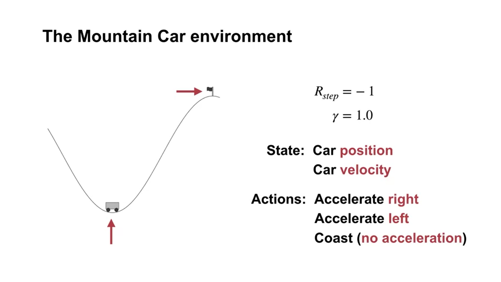

Chapter 9. On-policy Control with Approximation#
In this chapter we return to the control problem (policy improvement) and estimate action value function \(\hat{q}(s, a, \boldsymbol{w}) \approx q_\star(s,a)\), and still restrict our attention to the on-policy case.
We now feature the semi-gradient Sarsa algorithm, the natural extension of semi-gradient TD(0) (last chapter) to action values and to on-policy control. In the episodic case, the extension is straightforward, but in the continuing case we have to take a few steps backward and re-examine how we have used discounting to define an optimal policy. We will talk about how we would give up discounting and switch to a new “average-reward” formulation of the control problem, with new “differential” value functions.
9.1 Episodic semi-gradient control#
How to compute action-value function (linear case)
Smilar to the last chapter in the linear case, the approximated action-value function is computed by
\[ \hat{q}(s, a, \boldsymbol{w_t}) \dot= \boldsymbol{w}^{\intercal} \boldsymbol{x}(s, a) \]The feature vector \(\boldsymbol{x}(s, a)\) for action-dependent function approximation is constructed by stacking the features for each action. E.g., 4 features that represent the state of the system and 3 possible actions lead to a feature vector with 12 elements.
For generalizing over actions (like over states in the last chapter), we can input both the state and the action into a neural network, which will have state-action pairs as input and produce a single output: the approximate action value for that specific state and action.
This optional lecture video gives a vivid illustration of the above notes, i.e., about how the computation is done, and especially, how the feature vector is constructed.
Gradient descent update:
General update rule for action-value prediction
\[ \boldsymbol{w_{t+1}} \dot= \boldsymbol{w_t} + \alpha [U_t - \hat{q}(S_t, A_t, \boldsymbol{w_t})]\nabla\hat{q}(S_t, A_t, \boldsymbol{w_t}) \]Update rule for Episodic semi-gradient one-step Sarsa
update rule
\[ \boldsymbol{w_{t+1}} \dot= \boldsymbol{w_t} + \alpha [R_{t+1} + \gamma\hat{q}(S_{t+1}, A_{t+1}, \boldsymbol{w_t}) - \hat{q}(S_t, A_t, \boldsymbol{w_t})]\nabla\hat{q}(S_t, A_t, \boldsymbol{w_t}) \]note that the update target at time step \(t+1\) is given by the action value function with weights from time step \(t\).
Algorithm:
Input: a differentiable action-value function parameterization \(\hat{q}: S \times A \times \mathbb{R}^d \rightarrow \mathbb{R}\)
Algorithm parameter: step size \(\alpha\), small \(\epsilon > 0 \)
Initialize value function weights \(\boldsymbol{w} \in \mathbb{R}^d arbitrarily\)
Loop for each episode:
\(S, A \leftarrow\) initial state and action of episode
Loop for each step of the episode:
Take action \(A\) according to the policy, observe \(S\prime, R\)
If \(S\prime\) is terminal:
update weights:
\[ \boldsymbol{w} \dot= \boldsymbol{w} + \alpha [R - \hat{q}(S, A, \boldsymbol{w})]\nabla\hat{q}(S, A, \boldsymbol{w}) \]Go to the next episode
Choose \(A\prime\) based on the function \(\hat{q}(S, a, \boldsymbol{w})\) and the policy (e.g., \(\epsilon-greedy\))
Update weights:
\[ \boldsymbol{w} \dot= \boldsymbol{w} + \alpha [R + \gamma\hat{q}(S\prime, A\prime, \boldsymbol{w}) - \hat{q}(S, A, \boldsymbol{w})]\nabla\hat{q}(S, A, \boldsymbol{w}) \]Updata state and action:
\[\begin{split} S \leftarrow S\prime \\ A \leftarrow A\prime \end{split}\]
Update rule for semi-gradient Expected Sarsa:
\[ \mathbf{w} \leftarrow \mathbf{w} + \alpha \left( R_{t+1} + \gamma \sum_{a'} \pi(a' \mid S_{t+1}) \hat{q}(S_{t+1}, a', \mathbf{w}) - \hat{q}(S_t, A_t, \mathbf{w}) \right) \nabla \hat{q}(S_t, A_t, \mathbf{w}) \]Update rule for semi-gradient Q-learning:
\[ \mathbf{w} \leftarrow \mathbf{w} + \alpha \left( R_{t+1} + \gamma \max_{a'} \hat{q}(S_{t+1}, a', \mathbf{w}) - \hat{q}(S_t, A_t, \mathbf{w}) \right) \nabla \hat{q}(S_t, A_t, \mathbf{w}) \]
Using gradient methods for on-policy control: Example of Mountain Car (lecture video)
Quick intro: driving an underpowered car up a steep mountain road and gravity is stronger than the car’s engine - a simple example of a continuous control task where things have to get worse in a sense (farther from the goal) before they can get better. Set up of this problem:
The car moves according to a simplified physics. Its position, \(x_t\), and velocity, \(\dot{x}_t\), are updated by
\[\begin{split} \begin{align*} & x_{t+1} \doteq \text{bound}[x_t + \dot{x}_t] \\ & \dot{x}_{t+1} \doteq \text{bound}[\dot{x}_t + 0.001 A_t - 0.0025 \cos(3x_t)], \end{align*} \end{split}\]where the \(\text{bound}\) operation enforces \(-1.2 \leq x_{t+1} \leq 0.5\) and \(-0.07 \leq \dot{x}_{t+1} \leq 0.07\).
In addition, when \(x_t\) reached the left bound, \(\dot{x}_{t+1}\) was reset to zero. When it reached the right bound, the goal was reached and the episode was terminated.
Each episode started from a random position \(x_t \in [-0.6, -0.4]\) and zero velocity.
We used 8 tilings, with each tile covering \(1/8th\) of the bounded distance in each dimension
\({\star}\) Methods for improving exploration under function approximation
This is an apsect that is not included in Sutton’s book (2018 edition), yet well covered by this lecture video. To put it in a nutshell, the two main methods for exploration improvement (not necessarily work well) are:
Optimistic Initial Values: In tabular settings, initializing values higher than the true ones encourages exploration. This works well in tabular settings but is complex in function approximation (e.g., neural networks), where relationships between inputs and outputs are non-linear. While optimistic initialization can guide exploration, it may lose effectiveness due to generalization in networks or non-localized updates.
Epsilon Greedy: This method, which uses randomness to explore actions, is applicable with any function approximation and easy to implement. However, it doesn’t provide the systematic exploration seen with optimistic initialization.
Conclusion: Combining optimistic values with function approximation is complex, and while Epsilon greedy can be used universally, it’s less directed. Improving exploration in function approximation remains an open research question.
9.2 Average Reward: A New Way of Formulating Control Problems#
Motivation: This lecture video motivates the average reward setting and is optional to watch.
Definition: Like the discounted setting, the average reward setting applies to continuing problems, however, there is no discounting. In the average-reward setting, the average reward is defined as below, and reflects the quality of the policy \(\pi\).
\[\begin{split} \begin{align} r(\pi) &\doteq \lim_{h \to \infty} \frac{1}{h} \sum_{t=1}^h \mathbb{E}[R_t \mid S_0, A_{0:t-1} \sim \pi] \\ &= \lim_{t \to \infty} \mathbb{E}[R_t \mid S_0, A_{0:t-1} \sim \pi], \\ &= \sum_{s} \mu_\pi(s) \sum_{a} \pi(a \mid s) \sum_{s',r} p(s', r \mid s, a) r, \end{align} \end{split}\]\(\mu_\pi(s)\doteq \lim_{t \to \infty} \Pr\{S_t = s \mid A_{0:t-1} \sim \pi\}\) is the steady-state distribution and is assumed to exist for any \(\pi\) and to be independent of \(S_0\) (This assunmption about MDP is known as \(\textit{ergodicity assumption}\)).
We consider all policies that attain the maximal value of \(r(\pi)\) to be optimal.
Necessity for the average reward setting: the discounted setting is problematic with function approximation, readers of interests can refer to the book chapter 10.4
Derived definitions:
Returns: returns are defined in terms of differences between rewards and the average reward:
\[ G_t \doteq R_{t+1} - r(\pi) + R_{t+2} - r(\pi) + R_{t+3} - r(\pi) + \cdots. \]Bellman equations:
\[\begin{split} \begin{align} v_\pi(s) &= \sum_{a} \pi(a \mid s) \sum_{r, s'} p(s', r \mid s, a) \left[ r - r(\pi) + v_\pi(s') \right], \\ q_\pi(s, a) &= \sum_{r, s'} p(s', r \mid s, a) \left[ r - r(\pi) + \sum_{a'} \pi(a' \mid s') q_\pi(s', a') \right], \end{align} \end{split}\]Bellman Optimality equations:
\[\begin{split} \begin{align} v_*(s) &= \max_{a} \sum_{r, s'} p(s', r \mid s, a) \left[ r - \max_\pi r(\pi) + v_*(s') \right], \\ q_*(s, a) &= \sum_{r, s'} p(s', r \mid s, a) \left[ r - \max_\pi r(\pi) + \max_{a'} q_*(s', a') \right]. \end{align} \end{split}\]The two TD errors (differential form):
\[\begin{split} \begin{align} \delta_t &\doteq R_{t+1} - \bar{R}_t + \hat{v}(S_{t+1}, \mathbf{w}_t) - \hat{v}(S_t, \mathbf{w}_t), \\ \delta_t &\doteq R_{t+1} - \bar{R}_t + \hat{q}(S_{t+1}, A_{t+1}, \mathbf{w}_t) - \hat{q}(S_t, A_t, \mathbf{w}_t). \end{align} \end{split}\]
Derived Algorithm Example:
Differential semi-gradient Sarsa for estimating \(\hat{q} \approx q_*\)
Input: a differentiable action-value function \(\hat{q}: \mathcal{S} \times \mathcal{A} \times \mathbb{R}^d \rightarrow \mathbb{R}\)
Algorithm parameters: step sizes \(\alpha, \beta > 0\)
Initialize:
Value-function weights \(\boldsymbol{w} \in \mathbb{R}^d\) arbitrarily (e.g., \(\boldsymbol{w = 0}\))
Average reward estimate \(\bar{R} \in \mathbb{R}\) arbitrarily (e.g., \(\bar{R} = 0\))
Initialize state \(S\) and action \(A\).
Loop forever (for each step):
Take action \(A\), observe \(R\) and \(S'\).
Choose \(A'\) as a function of \(\hat{q}(S', \cdot, \boldsymbol{w})\) (e.g., \(\epsilon\)-greedy).
Compute: \(\delta \leftarrow R - \bar{R} + \hat{q}(S', A', \boldsymbol{w}) - \hat{q}(S, A, \boldsymbol{w}) \)
Keep tracking the average reward: \(\bar{R} \leftarrow \bar{R} + \beta \delta\)
Update value-function weights: \(\boldsymbol{w} \leftarrow \boldsymbol{w} + \alpha \delta \nabla \hat{q}(S, A, \boldsymbol{w})\)
Update state and action: \(S \leftarrow S', A \leftarrow A'\)
Note: Unlike Sarsa, a key difference of differential Sarsa is that it has to track an estimate of the average reward under its policy and subtract it from the sample reward in its update as below:
\[\bar{R} \leftarrow \bar{R} + \beta (R-\bar{R})\]In practice, the term \((R-\bar{R})\) is replaced with \(\delta\) to achieve better performance (lower variance).
Optional Watching: Satinder Singh on Intrinsic Rewards
9.3 Summary#
In this chapter, we extended tabular control methods to function approximation, examined changes in exploration techniques, and introduced the average reward framework for continuous control. Detailed aspects are:
Mindmap of where we are now

Key Takeaways
Action Value Estimation: For discrete action spaces, state features can be stacked, while for continuous action spaces, the action can be treated as an input (to a neural network) along with other state variables.
Algorithm Overview: Function approximation is introduced on the algorithm map. We focused on extending tabular control algorithms (SARSA, expected SARSA, and Q-Learning) to accommodate function approximation. These extensions involve modifying update equations to use gradient-based weight updates.
Episodic SARSA: We demonstrated how episodic SARSA could solve the mountain car problem, showing that a larger step size (0.5) allows for faster learning.
Exploration Strategies: Optimistic initialization is useful with structured features but may not work as expected with non-linear function approximators like neural networks, as optimism can fade quickly. Epsilon-greedy is a more reliable exploration method regardless of the function approximator.
Average Reward Framework: We introduced a new way to approach continuing control problems by maximizing the average reward over time, rather than focusing on discounted returns. We defined differential returns and values, which help the agent evaluate actions in this framework.
Differential Semi-Gradient SARSA: This new algorithm, using the average reward framework, approximates differential values to learn policies, extending the previous algorithms.